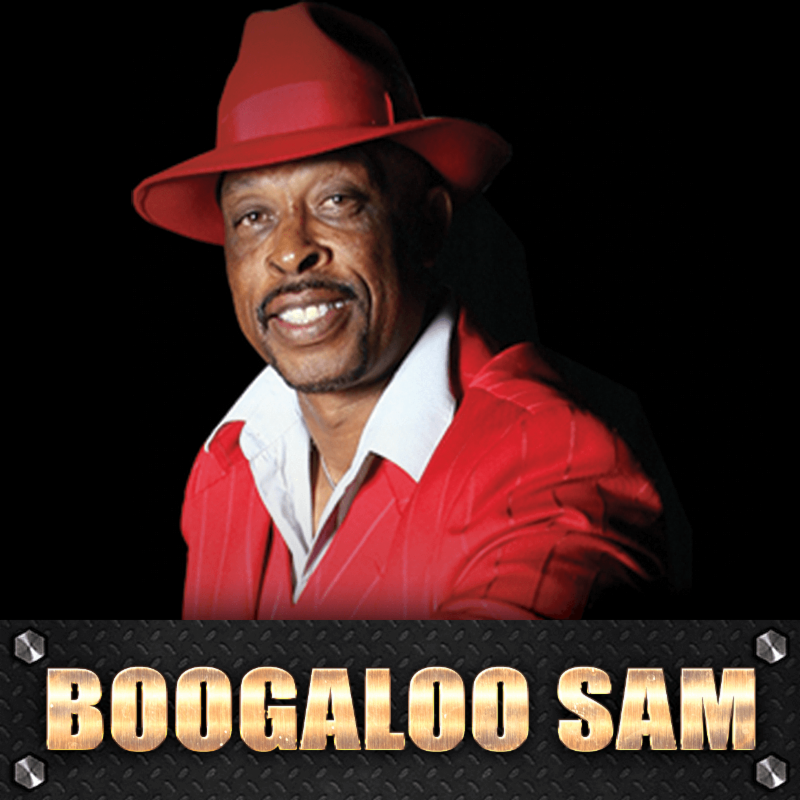

Pokaż zdjęcia
Boogaloo Sam to jeden z tancerzy, którzy stworzyli Popping. Zainspirował się stylem zwanym Locking i na jego podstawie stworzył nowy.
Jednym z popularniejszych tancerzy tego stylu jest Popin' Pete, brat Boogaloo Sama, który uczył się wraz z nim.
Pierwszą formacją tancerzy Poppingowych było utworzone przez wspomnianych braci Electric Boogaloos, które oficjalnie utworzyło i rozpromowało styl zwany Poppingiem.